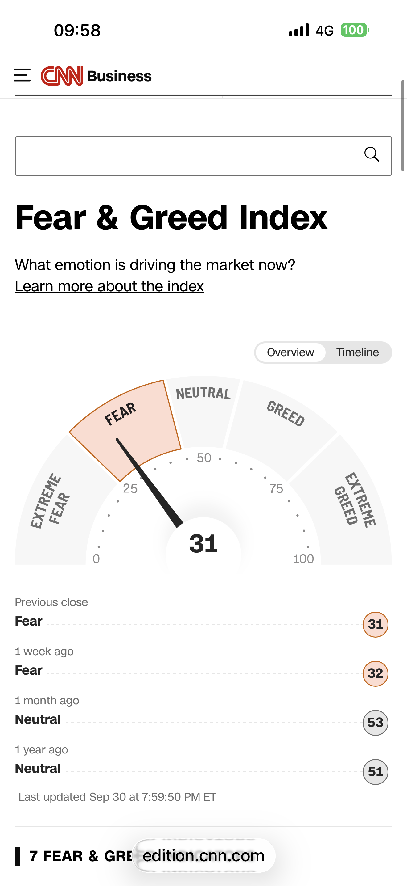
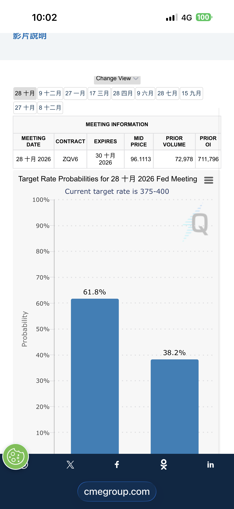

恐懼與貪婪指數
CNN Fear & Greed Index
近一年走勢（虛線：25 恐懼／75 貪婪）
看原始截圖（9/30 收盤）

FedWatch 降息機率
CME FedWatch Tool：每次 FOMC 會議的利率結果機率
上面是 CME 的原圖表，可以直接切換會議日期。如果是空白或出現錯誤，代表 CME 不允許嵌入，請看下面的截圖。
看截圖（10/1 截，10/28 會議）

會議 2026/10/28目前利率 375–40061.8%38.2%
截圖當時的資料，不是即時數字。
之後加的卡片
- 10 年期美債殖利率（「如果只練兩個」之一）
- IWM 對 SPY：小型股有沒有跟上大盤（之二）
- VIX、美元指數、油價
- NAAIM（每週三）、Polymarket